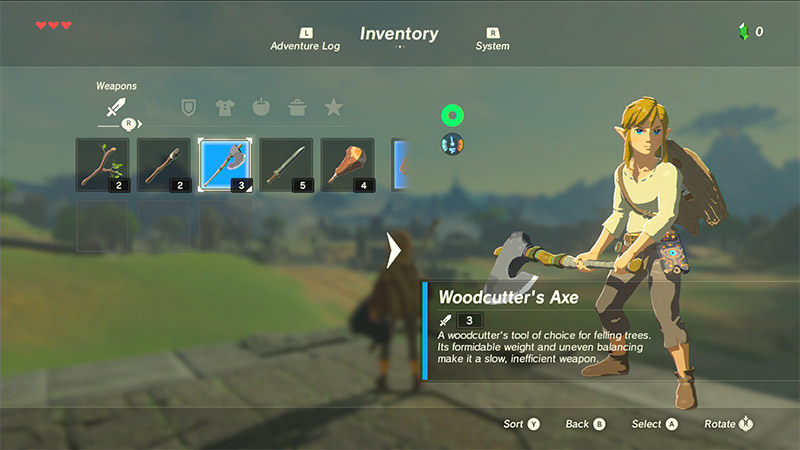
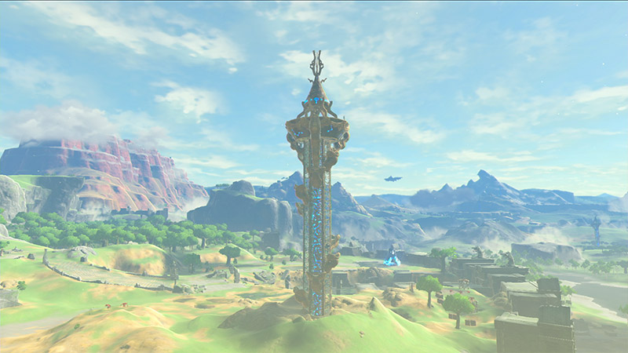

No kingdom. No memories. After a 100-year slumber, Link wakes up alone in a world he no longer remembers. Now the legendary hero must explore a vast and dangerous land and regain his memories before Hyrule is lost forever.
Armed only with what he can scavenge, Link sets out to find answers and the resources needed to survive.
Explore Hyrule
The Sheikah Slate features a map of Hyrule to guide Link’s journey. It also has a scope to identify points of interest from a distance.
Download runess
In certain Shrines, Link can download Runes to learn new abilities to help solve puzzles and unlock secret areas.

Get organized
Link can manage his adventure with the Sheikah Slate, using the Inventory to organize items and tracking quests in the Adventure Log.
Discover the vast world around you
Explore the landscape of Hyrule any way you like. Climb up towers and mountain peaks in search of new destinations, then set your own path and plunge into the wilderness.

Towers
Before Link ventures out into the wild, he can climb to the top of a tower to survey the land.
Shrines
There are more than 100 Shrines of Trials scattered throughout Hyrule. Link must solve the puzzles inside to prove his heroism and earn in-game rewards.
Villages
Link visits many different villages on his journey, each with a unique look and feel.
Stables
Stables aren’t just for horses anymore. Link can also rest there to restore his health or prepare food or Elixirs before his next adventure.